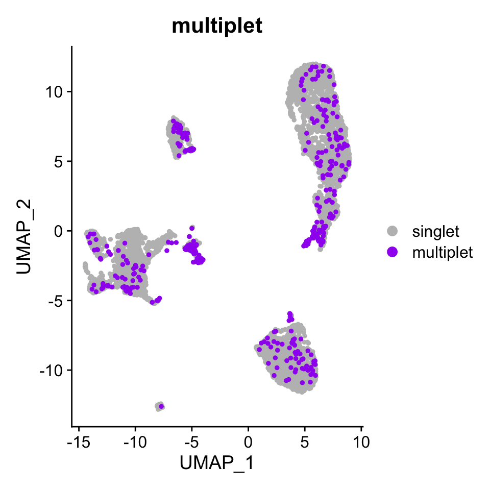

The standard outputs from 10x’s cellranger-atac count are used in this tutorial to detect the multiplet cells. These are the position sorted BAM file and the CSV file containing the metadata for the single cell barcodes.
ls -1 example_data/pbmc1#> example_seurat_pbmc1.Rds
#> possorted_bam.bam.bai
#> singlecell.csvThe additional files rquired for the analysis are a TXT file with list of chromosomes to use for the analysis and a BED file with the repetitive regions for the chosen genome. The repetitive regions can be downloaded from here.
head human_autosomes.txt#> chr1
#> chr2
#> chr3
#> chr4
#> chr5
#> chr6
#> chr7
#> chr8
#> chr9
#> chr11head RepeatFilterFiles/blacklist_repeats_segdups_rmsk_hg38.bed#> chr1 10000 10468
#> chr1 10627 10800
#> chr1 10757 10997
#> chr1 11225 11447
#> chr1 11271 11448
#> chr1 11283 11448
#> chr1 19305 19443
#> chr1 20828 20863
#> chr1 30862 30959
#> chr1 44835 44876The shell command used is as follows:
AMULET-v1.0/AMULET.sh --bambc CB --bcidx 0 --cellidx 8 --iscellidx 9 \
$PWD/example_data/pbmc1/possorted_bam.bam \
$PWD/example_data/pbmc1/singlecell.csv \
$PWD/AMULET-v1.0/human_autosomes.txt \
$PWD/AMULET-v1.0/human_autosomes.txt/RepeatFilterFiles/blacklist_repeats_segdups_rmsk_hg38.bed \
example_output/pbmc1/ \
$PWD/AMULET-v1.0/
The output files will be in the chosen output directory and look as follows.
ls example_output/pbmc1#> MultipletBarcodes_01.txt
#> MultipletCellIds_01.txt
#> MultipletProbabilities.txt
#> MultipletSummary.txt
#> OverlapSummary.txt
#> Overlaps.txt
#> RunTime.txt
#> StatSummary.txtThe summary of the program will look like the following:
cat example_output/pbmc1/MultipletSummary.txt#> Number of Cells 6143
#> Number of Merged Regions 31375
#> Number of Doublets 431
#> Doublet Percent 7.016115904281296The ids of the cells that are identified as doublets are the following. These can be removed from a Seurat object in the downstream analyses after following the Signac Pipeline.
head example_output/pbmc1/MultipletCellIds_01.txt#> _cell_1000
#> _cell_1003
#> _cell_1013
#> _cell_1036
#> _cell_1038
#> _cell_1044
#> _cell_1063
#> _cell_1064
#> _cell_1070
#> _cell_1083First required packages for the pipeline are loaded in.
library(Seurat)
library(Signac)
library(dplyr)
library(tidyr)
library(ggplot2)
library(stringr)Ids of the multiplet cells are read in and have the following format
multiplets <- read.table("example_output/pbmc1/MultipletCellIds_01.txt") %>% t() %>% as.vector()
head(multiplets)#> [1] "_cell_1000" "_cell_1003" "_cell_1013" "_cell_1036" "_cell_1038"
#> [6] "_cell_1044"The Seurat object processed by the Signac Pipeline is loaded.
pbmc.atac <- readRDS(file = "example_data/pbmc1/example_seurat_pbmc1.Rds")
pbmc.atac#> An object of class Seurat
#> 174800 features across 6143 samples within 1 assay
#> Active assay: ATAC (174800 features, 174800 variable features)
#> 2 dimensional reductions calculated: svd, umapCells in the Seurat object must have the same format as the multiplet cell ids.
Get all of the cells in the seurat object.
cells <- Cells(pbmc.atac)
head(cells)#> [1] "_cell_0" "_cell_1" "_cell_10" "_cell_100" "_cell_1000"
#> [6] "_cell_1001"Add the multiplet information for the cells in the Seurat object.
multiplet.metadata <- rep("singlet", length(cells))
names(multiplet.metadata) <- cells
multiplet.metadata[multiplets] <- "multiplet"
pbmc.atac <- AddMetaData(pbmc.atac, multiplet.metadata, col.name = "multiplet")
DimPlot(pbmc.atac, group.by = "multiplet", pt.size = 1,
cols = c("singlet" = "grey", "multiplet" = "purple"),
order = c("multiplet", "singlet"))
Remove the multiplet cells from the Seurat object and perform the downstream analyses.
pbmc.atac <- subset(pbmc.atac, multiplet == "singlet")
pbmc.atac#> An object of class Seurat
#> 174800 features across 5712 samples within 1 assay
#> Active assay: ATAC (174800 features, 174800 variable features)
#> 2 dimensional reductions calculated: svd, umap